Welcome to Delicioso, where culinary artistry meets the vibrant flavors of Spanish cuisine. Nestled in the heart of [Your City], our restaurant is a haven for those seeking an authentic and unforgettable dining experience.
Step into our warm and inviting ambiance, where the rich tapestry of Spanish culture is woven into every detail. Delicioso is not just a place to dine; it's a journey through the diverse regions of Spain, brought to life on your plate. From the sun-drenched coasts of Andalusia to the bustling markets of Barcelona, our menu captures the essence of Spain's gastronomic heritage.
Immerse yourself in the symphony of tastes that our talented chefs curate with passion and precision. Each dish is a celebration of fresh, locally-sourced ingredients, expertly combined to transport you to the lively streets of Madrid or the quaint villages of Catalonia. At Delicioso, we believe in the power of exceptional cuisine to create memories, and we invite you to savor the moments with every delightful bite.
Our commitment to authenticity extends beyond the kitchen. From the warm smiles of our staff to the carefully curated decor that echoes the spirit of Spanish artistry, every aspect of Delicioso is designed to whisk you away on a gastronomic journey. Whether you're sharing a romantic evening, gathering with friends, or hosting a special event, our restaurant provides the perfect setting for every occasion.
Indulge in our signature tapas, crafted to perfection and meant for sharing. Allow the aroma of paella, infused with saffron and brimming with seafood, to transport you to the Mediterranean coast. And don't forget to save room for our decadent desserts, a sweet finale to your culinary adventure at Delicioso.
As the sun sets and the evening unfolds, we invite you to linger, savor, and create moments that linger in your memory. Delicioso is more than a restaurant; it's a celebration of life, love, and the art of savoring each moment. Join us, and let the flavors of Spain awaken your senses in an experience that is truly delicioso.
¡Bienvenidos a Delicioso!
Menu
Paella
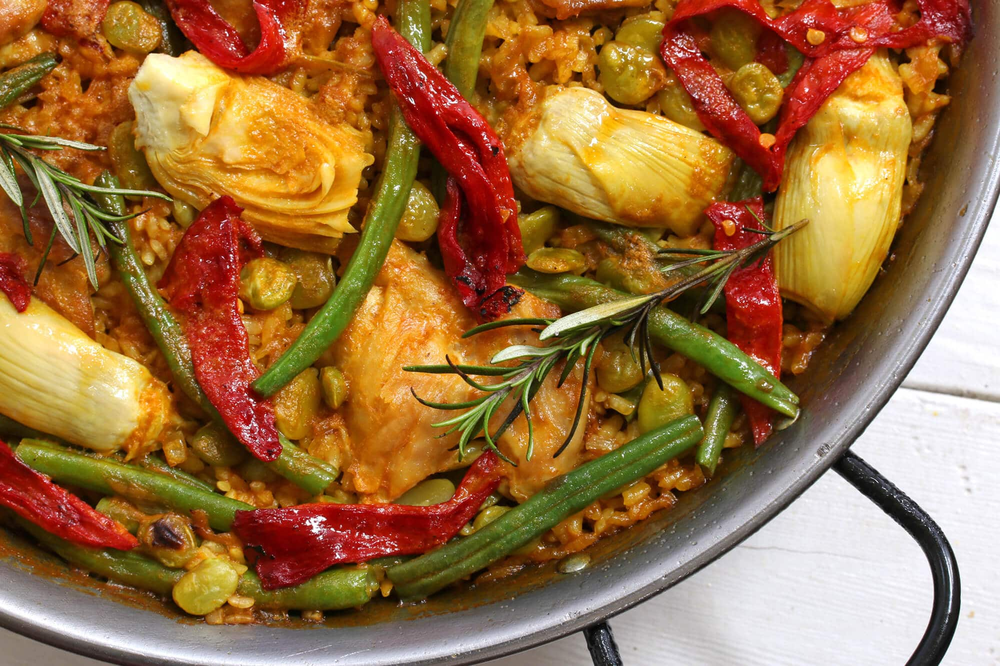
Indulge in the vibrant flavors of our exquisite paella, a Spanish culinary masterpiece that takes your taste buds on a journey through saffron-infused rice, succulent seafood, and a symphony of aromatic spices. Each mouthful is a celebration of authenticity, with the perfect balance of textures and the rich essence of the Mediterranean. Immerse yourself in a sensory delight that transcends ordinary dining – our paella is not just a dish; it's a gastronomic experience that captures the essence of Spain's culinary prowess. Elevate your dining adventure with our tantalizing paella, where every grain of rice tells a tale of tradition, passion, and unparalleled taste.
Tortilla
Embark on a culinary journey with our delectable Tortilla, a Spanish omelette that transcends simplicity. Meticulously crafted from golden potatoes and farm-fresh eggs, this savory delight boasts a harmonious blend of flavors and a velvety texture. The artistry of our Tortilla lies in its simplicity, offering a genuine taste of Spain in every sumptuous bite, making it a timeless favorite among discerning palates.
Calamares a la Romana
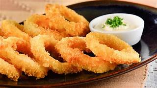
Savor the taste of the Mediterranean with our Calamares a la Romana. Impeccably prepared, our calamari is tender and succulent, encased in a light, golden-brown batter. This culinary masterpiece brings the flavors of Rome to your plate, with a perfect balance of crispiness and tenderness. Calamares a la Romana is a celebration of the sea, an invitation to indulge in the finest seafood experience that transports you to the heart of coastal dining in the Eternal City.
Gazpacho
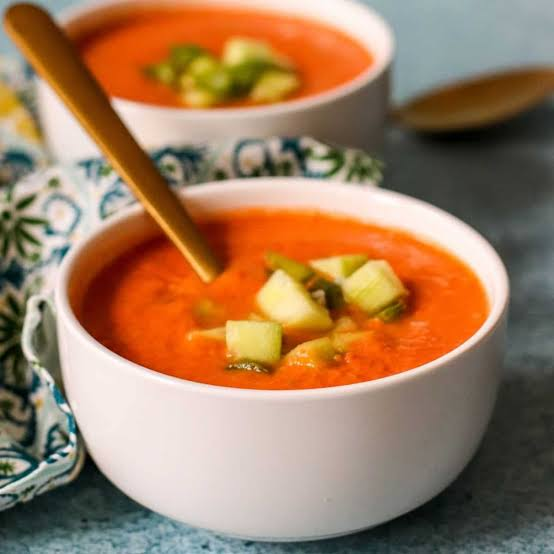
Transport yourself to the sun-drenched landscapes of Andalusia with our Gazpacho, a chilled tomato soup that embodies the essence of Spanish summers. Bursting with the freshness of sun-ripened tomatoes, crisp cucumbers, and vibrant bell peppers, Gazpacho is a refreshing elixir that revitalizes your palate. Immerse yourself in the cool, invigorating flavors, and let the zesty notes dance on your taste buds. This authentic Spanish soup is not just a dish; it's a celebration of the bountiful harvest and the vibrant spirit of Mediterranean cuisine.
Turron
Sweeten your senses with the irresistible charm of Turron, a traditional Spanish nougat that epitomizes the country's confectionery excellence. Our Turron is a delicate fusion of roasted almonds, sweet honey, and a touch of Mediterranean magic. Each bite is a symphony of flavors, a harmonious blend of nuttiness and sweetness that captivates your taste buds. Elevate your dessert experience with this iconic Spanish treat, perfect for sharing joy and creating sweet memories with loved ones.
Gallery
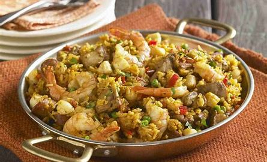
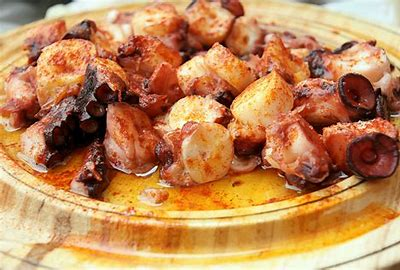
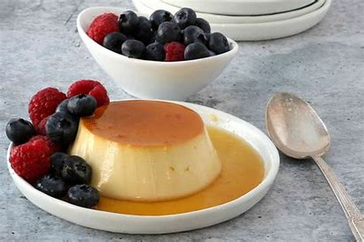
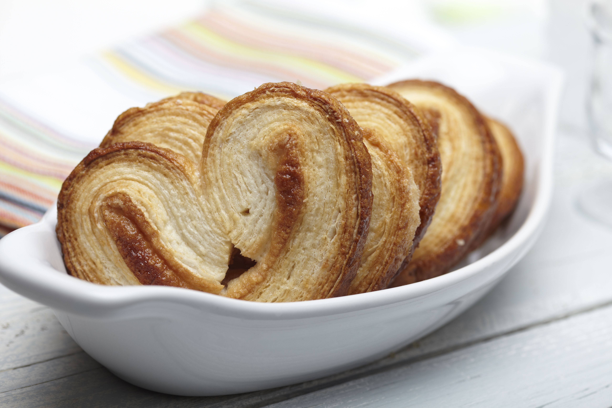
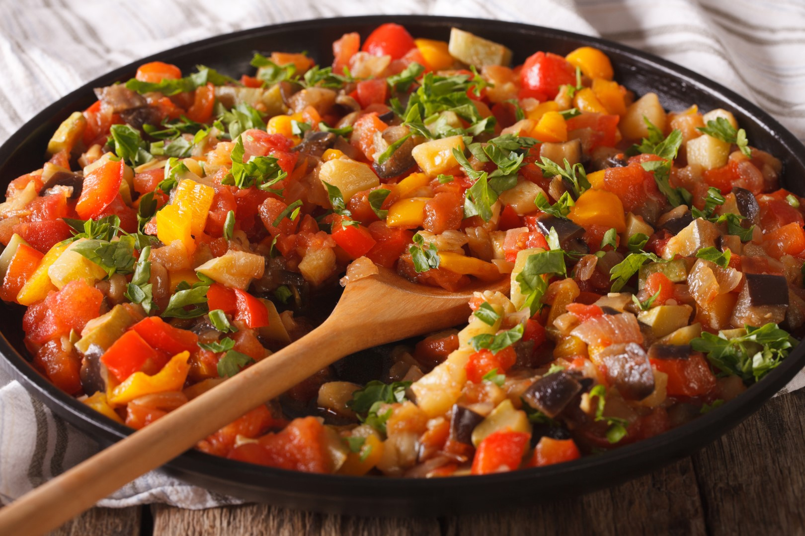
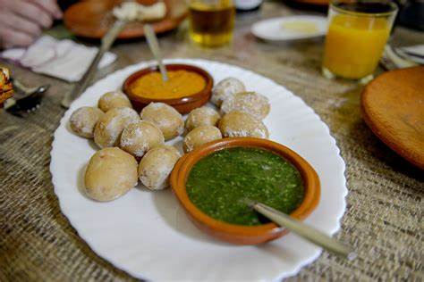
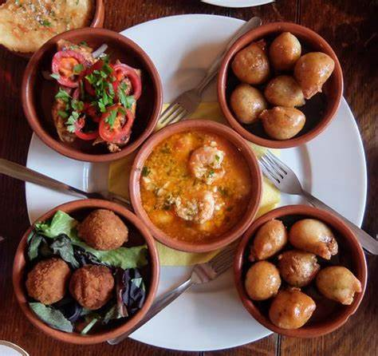
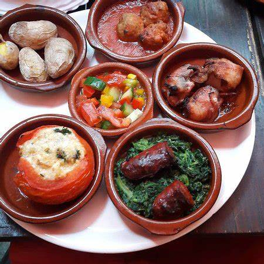
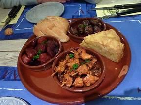
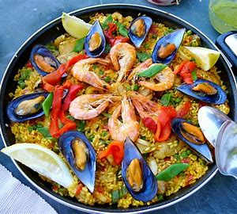
Paella
About Us
Welcome to Delicioso, where culinary excellence meets warm hospitality. Our story is one of passion, dedication, and a commitment to delivering an exceptional dining experience to our cherished guests. Our Journey At Delicioso, our journey began with a simple yet profound vision – to create a haven for food enthusiasts, a place where flavors come alive, and memories are made. Established in 2023, we embarked on this culinary adventure with the aim of offering a unique blend of delectable cuisine, inviting ambiance, and impeccable service. Our Philosophy. Culinary Excellence We believe in the artistry of food. Our culinary team, led by Joelle Samuel Baja, is dedicated to crafting dishes that tantalize the taste buds and celebrate the finest ingredients. From farm-fresh produce to premium cuts of meat, we source only the best to ensure every bite is a culinary delight.
Warm Hospitality
Hospitality is at the heart of everything we do. From the moment you step through our doors, our friendly and attentive staff are here to make you feel at home. We take pride in creating an atmosphere where every guest is not just a patron but a welcomed member of our extended family.
Sustainable Practices:
Beyond the kitchen, we are committed to sustainability. We recognize the importance of ethical sourcing and eco-friendly practices. From reducing waste to supporting local farmers, we strive to make choices that positively impact both our community and the planet.
Our Ambiance:
Delicioso is more than just a place to eat; it’s an experience. Our thoughtfully designed space reflects our commitment to aesthetics and comfort. Whether you’re here for a romantic dinner, a family celebration, or a casual gathering with friends, our ambiance sets the stage for memorable moments.
Community Engagement:
We are proud to be an active part of the Bacolod community. Through various initiatives, we support local causes, contribute to charitable events, and collaborate with neighboring businesses. It’s our way of giving back to the community that has embraced us so warmly.
Your Feedback Matters:
The experiences of our guests shape our journey. We value your feedback and continually strive to improve. Feel free to share your thoughts with us, either in person or through our online channels. Your insights help us grow and enhance the Delicioso experience
Thank you for being a part of our story. We look forward to serving you and creating many more delightful moments together.
Bon Appétit!
Jay Virgil A. Sevillo
Founder & Owner, Delicioso
Contact Us
For any inquiries, reservations, or just to share your thoughts, we invite you to get in touch with us at Delicioso. Your feedback is invaluable to us as we strive to provide an exceptional dining experience.
Contact Information:
- Address: Prk. Candelaria Coraville Subd. Brgy. Sum-ag B.C
- Phone: 09263862912
- Email: Deliciososcuisineespanya@gmail.com
Our team is here to assist you and ensure that every visit to Delicioso is memorable. Whether you have dietary preferences, special requests, or you simply want to know more about our menu, feel free to reach out. We look forward to hearing from you and welcoming you to the flavorful world of Delicioso.
Thank you for considering us for your culinary experiences. ¡Hasta pronto!